Khởi tạo các dịch vụ Amazon Lambda, DynamoDb, IAM, CloudWatch, NACL nhằm tạo ra quy trình phản ứng dự cố tự động khi bị tấn công ssh. Thành công trong việc chặn ip của kẻ tấn công
Trong kiến trúc này:
/var/log/auth.log từ máy chủ EC2. Subscription Filter quét sự kiện Failed password và chuyển payload tới AWS Lambda.Bước 1 Truy cập IAM > Roles chọn Create Role
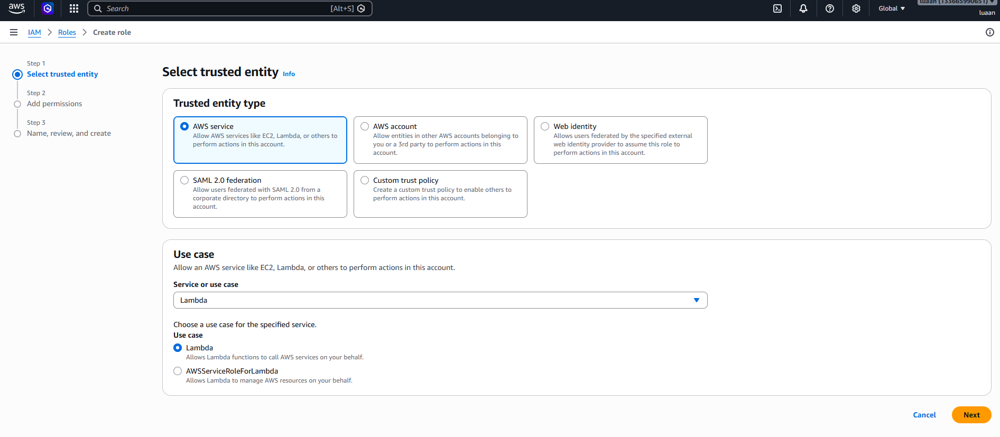
Bước 2 Thêm permission
{
"Version": "2012-10-17",
"Statement": [
{
"Effect": "Allow",
"Action": [
"ec2:CreateNetworkAclEntry",
"ec2:DescribeNetworkAcls"
],
"Resource": "*"
}
]
}
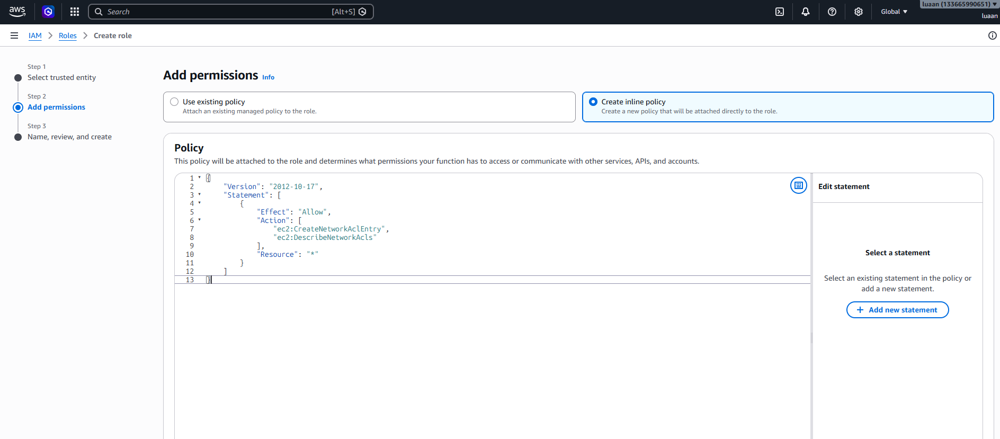
Bước 3
Đặt role name: Lambda-SSH-AutoBlock-Role
Đặt tên Inline policy: LambdaSSHAutoBlockRole
Chọn: Create
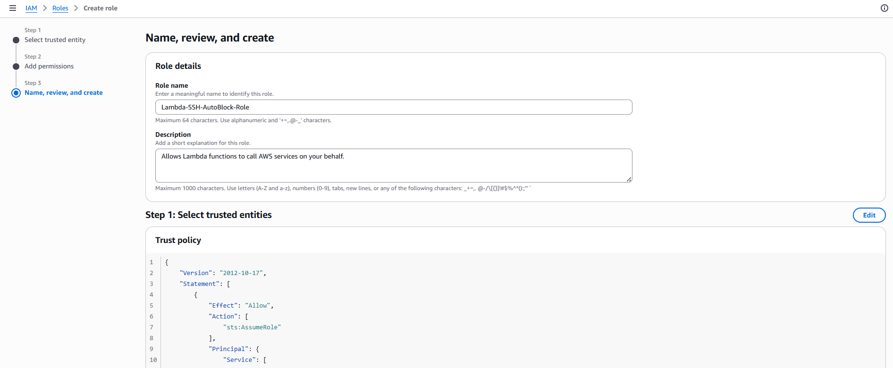
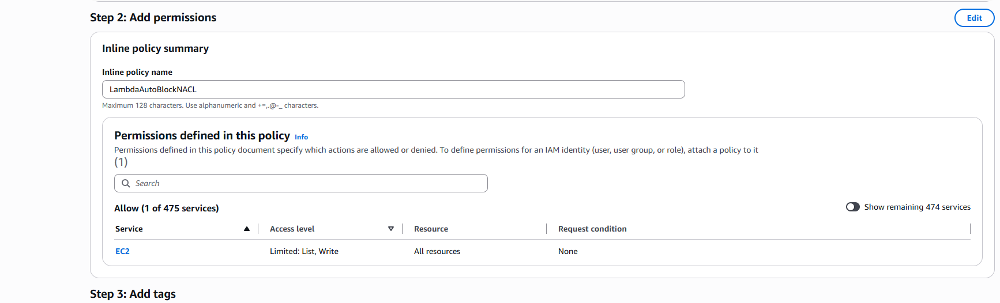
Vào IAM role vừa tạo để add thêm policyAWSLAmbdaBasicExcutionRole
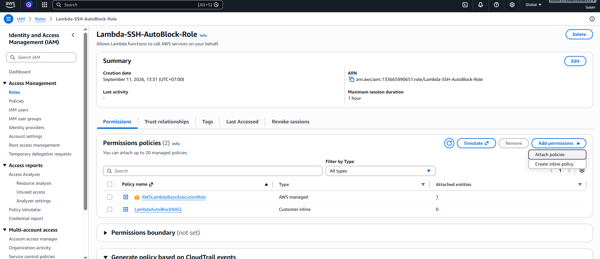
Bước 1 Khởi tạo Network ACL Truy cập VPC > Network ACLs > Create network ACL
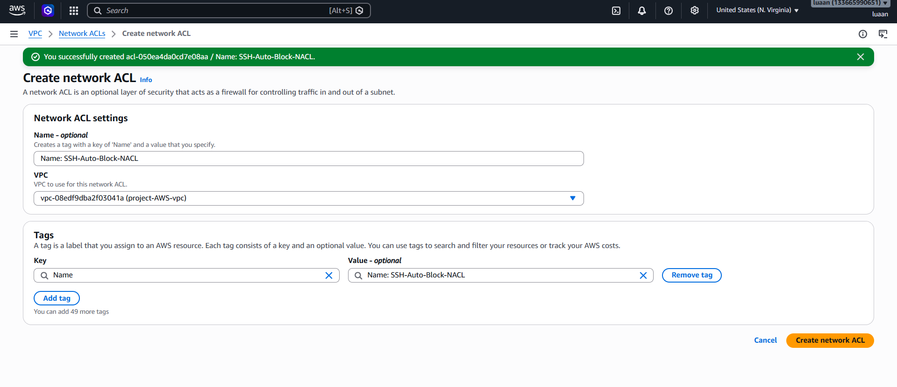
Bước 2 Cấu hình Network ACL mới tạo
Truy cập theo VPC > Network ACLs > acl-050ea4da0cd7e08aa / Name: SSH-Auto-Block-NACL Đầu tiên chọn: Edit subnet associations
Chọn Subnet public 1 do tạo máy EC2 bằng Subnet đó
Sau đó Save change
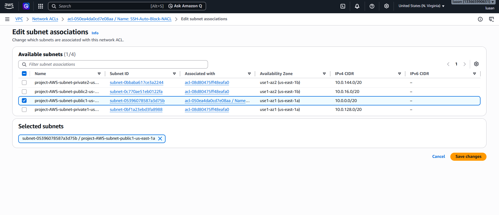
Tiếp theo đến cấu hìnhInbound và outbound rule
Add new rule với cấu hình:
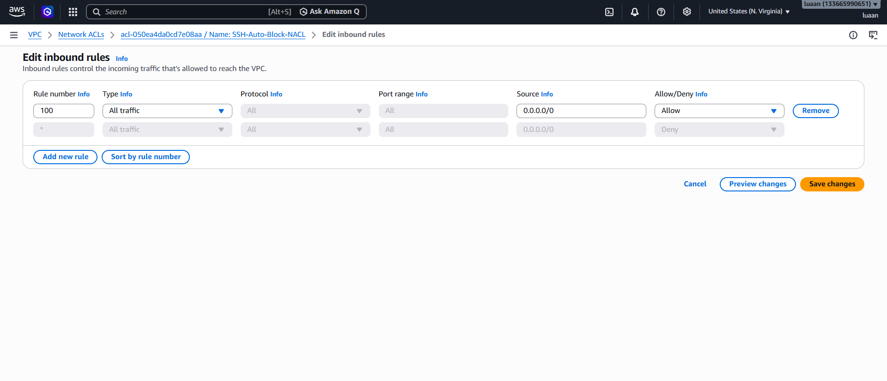
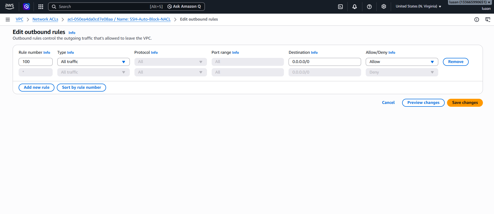
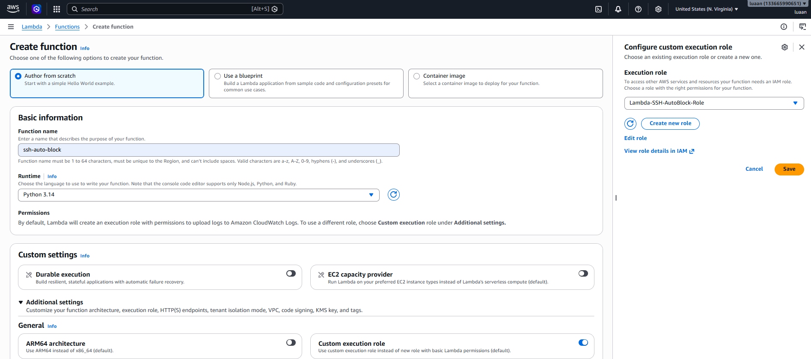
Bước 2 Cấu hình
Truy cập vào funtion vừa tạo ssh-auto-block
Tìm mục Configuaration chọn vào Environment variable và chọn edit
Cấu hình:
acl-050ea4da0cd7e08aa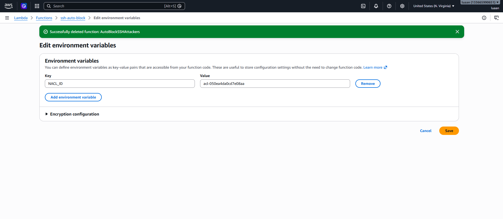
Create lambda subcription filter
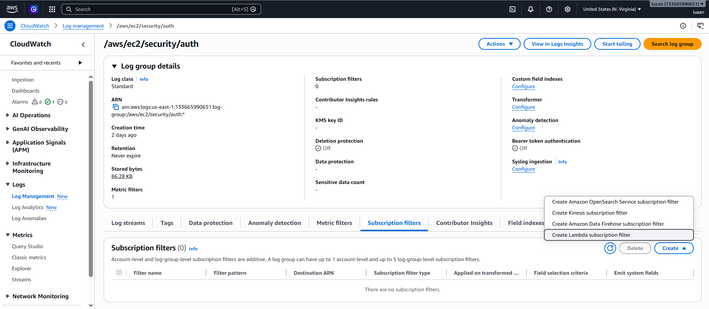
Sau khi vào mục tạo filter:
Start streaming
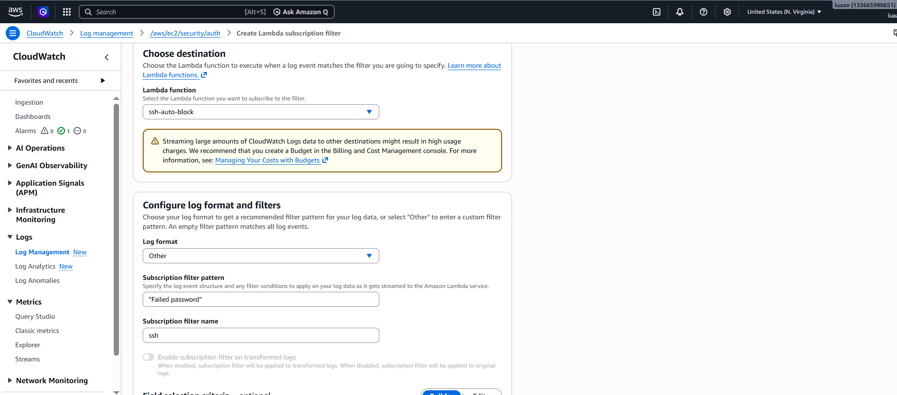
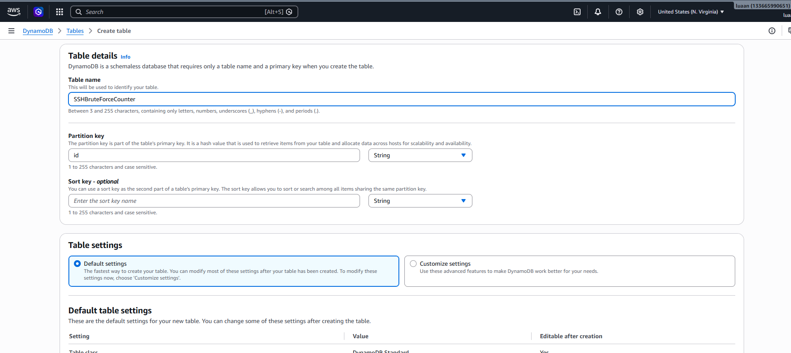
Bước 2 Liên kết môi trường
Truy cập vào funtion ssh-auto-block
Tìm mục Configuaration chọn vào Environment variable và chọn edit
Cấu hình:
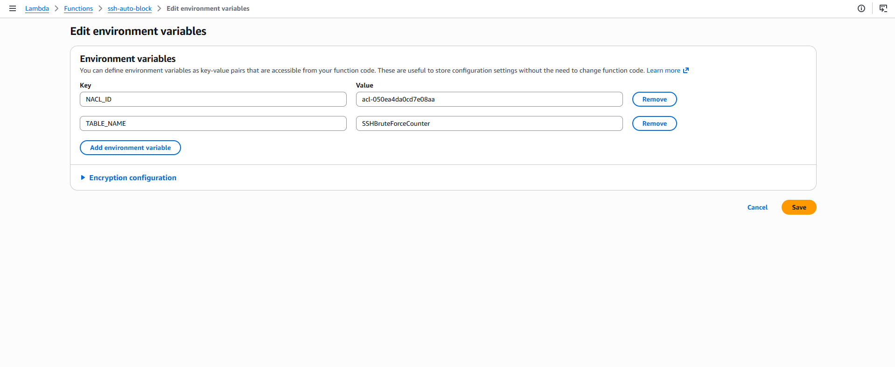
Bước 3 Thêm permission vào IAM role
Truy cập vào Lambda-SSH-AutoBlock-Role sau đó add permission theo create inline policy
Thêm code để có quyên cập nhật bảng DynamoDB
{
"Version": "2012-10-17",
"Statement": [
{
"Effect": "Allow",
"Action": [
"dynamodb:UpdateItem"
],
"Resource": "arn:aws:dynamodb:*:133665990651:table/SSHBruteForceCounter"
}
]
}
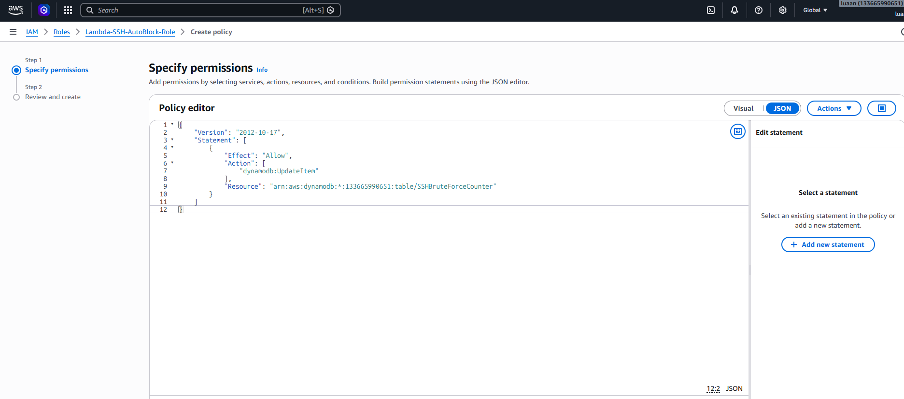
Sau đó đặt tên cho permission vừa tạo: Name: LambdaSSHBruteForceDynamoDB Sau đó: Create policy
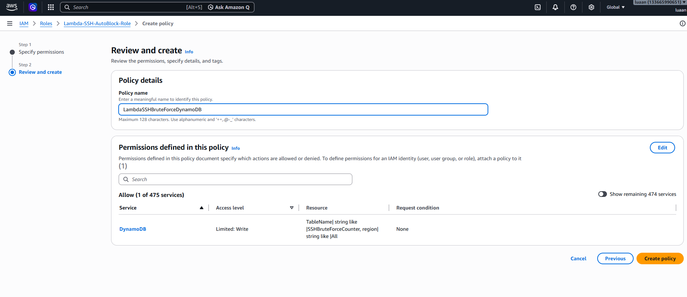
6. Dán code cho funtion Truy cập vào funtionssh-auto-block
Vào mục code:
Sau đó Deploy
import boto3
import os
import ipaddress
import base64
import gzip
import json
import re
import time
ec2 = boto3.client("ec2")
dynamodb = boto3.resource("dynamodb")
NACL_ID = os.environ["NACL_ID"]
TABLE_NAME = os.environ["TABLE_NAME"]
table = dynamodb.Table(TABLE_NAME)
THRESHOLD = 5
WINDOW_SECONDS = 60
def lambda_handler(event, context):
print("Received CloudWatch Logs event")
# ==========================================
# 1. Decode CloudWatch Logs event
# ==========================================
try:
compressed_payload = base64.b64decode(
event["awslogs"]["data"]
)
payload = gzip.decompress(
compressed_payload
)
data = json.loads(payload)
except Exception as e:
print("Failed to decode CloudWatch event:")
print(str(e))
return {
"statusCode": 400,
"message": "Invalid CloudWatch Logs event"
}
# ==========================================
# 2. Process each SSH log
# ==========================================
for log_event in data["logEvents"]:
message = log_event["message"].strip()
print("SSH LOG:")
print(message)
# ==========================================
# 3. Extract attacker IP
# ==========================================
match = re.search(
r"Failed password.*from\s+(\d{1,3}(?:\.\d{1,3}){3})",
message
)
if not match:
print("No attacker IP found")
continue
attacker_ip = match.group(1)
print("ATTACKER IP:", attacker_ip)
# ==========================================
# 4. Validate IP
# ==========================================
try:
ipaddress.ip_address(attacker_ip)
except ValueError:
print("Invalid IP:", attacker_ip)
continue
# ==========================================
# 5. Create 1-minute bucket
# ==========================================
current_time = int(time.time())
minute_bucket = current_time // WINDOW_SECONDS
item_id = f"{attacker_ip}#{minute_bucket}"
expiration = current_time + 120
print("Counter ID:", item_id)
# ==========================================
# 6. Increase failure counter
# ==========================================
response = table.update_item(
Key={
"id": item_id
},
UpdateExpression="""
ADD failure_count :one
SET expires_at = if_not_exists(expires_at, :expiration)
""",
ExpressionAttributeValues={
":one": 1,
":expiration": expiration
},
ReturnValues="ALL_NEW"
)
failure_count = response["Attributes"]["failure_count"]
print(
"Failed attempts:",
failure_count,
"/",
THRESHOLD
)
# ==========================================
# 7. Check threshold
# ==========================================
if failure_count < THRESHOLD:
print(
f"{attacker_ip}: "
f"{failure_count}/{THRESHOLD} "
f"attempts - NOT BLOCKED"
)
continue
# ==========================================
# 8. Threshold reached
# ==========================================
print(
f"THRESHOLD REACHED: "
f"{attacker_ip}"
)
cidr = attacker_ip + "/32"
# ==========================================
# 9. Check existing NACL rules
# ==========================================
response = ec2.describe_network_acls(
NetworkAclIds=[NACL_ID]
)
used_rules = []
already_blocked = False
for acl in response["NetworkAcls"]:
for entry in acl["Entries"]:
used_rules.append(
entry["RuleNumber"]
)
if (
entry.get("CidrBlock") == cidr
and entry.get("RuleAction") == "deny"
and entry.get("Egress") is False
):
already_blocked = True
break
if already_blocked:
print(
"IP already blocked:",
cidr
)
continue
# ==========================================
# 10. Find available rule number
# ==========================================
rule_number = 50
while rule_number in used_rules:
rule_number += 1
# ==========================================
# 11. Create NACL DENY rule
# ==========================================
try:
ec2.create_network_acl_entry(
NetworkAclId=NACL_ID,
RuleNumber=rule_number,
Protocol="-1",
RuleAction="deny",
Egress=False,
CidrBlock=cidr
)
print(
"SUCCESSFULLY BLOCKED:",
attacker_ip
)
print(
"NACL rule:",
rule_number
)
except Exception as e:
print(
"Failed to create NACL rule:"
)
print(str(e))
return {
"statusCode": 200,
"message":
"SSH brute-force detection processed"
}
Sau khi hoàn thành chương này, bạn sẽ đạt được:
Failed Password, kêt hợp với Lambda funtion để kich hoạt chặn ip gây hại.